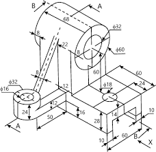
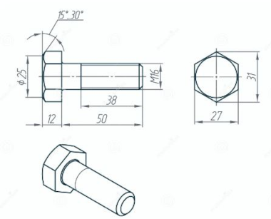
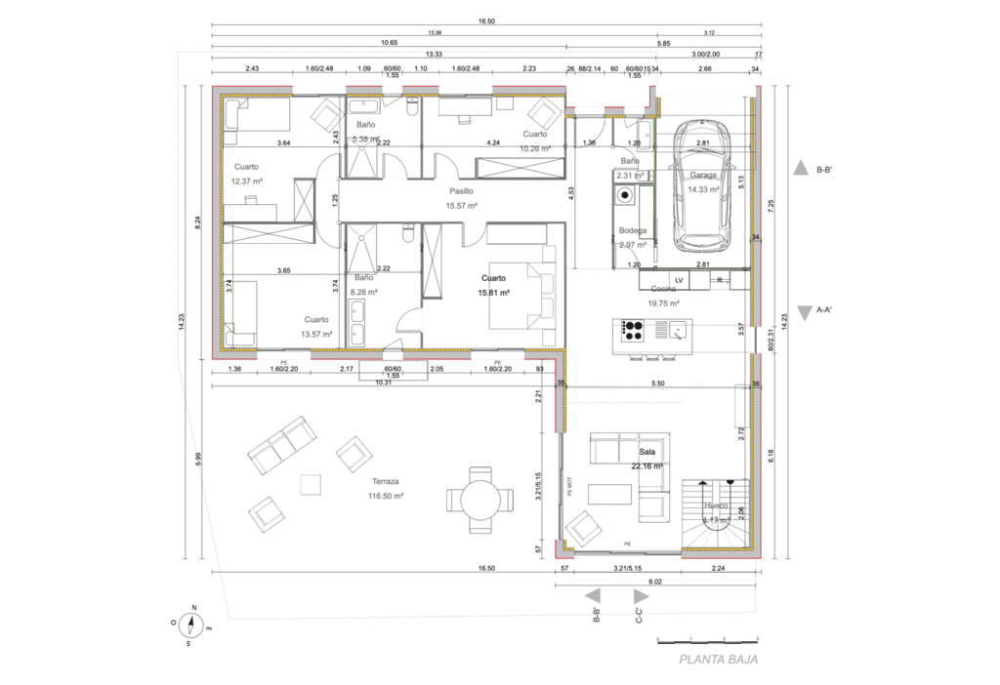

Volver a la pagina principal
Ejemplos
Ejemplos del dibujo técnico
En este apartado podrás encontrar claros ejemplos donde se puede ver el uso de el dibujo técnico en el ambito de la industria, arquitectura y muchos más...
Industria


Arquitectura
